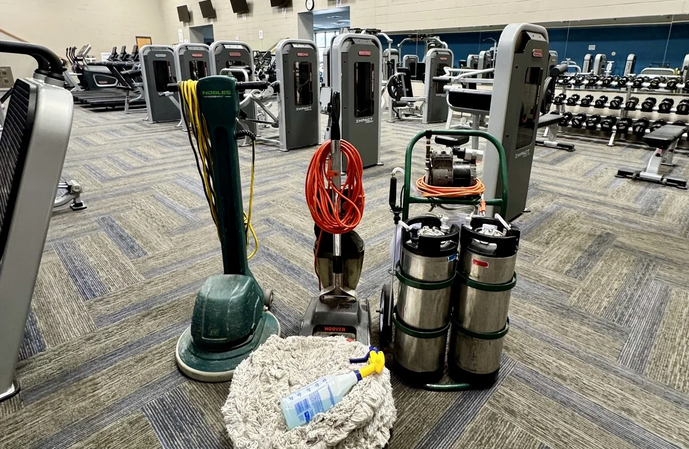

The cleaning method
Hot-water extraction rinses and extracts. Our carbonated, low-moisture service focuses on loosening and removing soil with less moisture. Ask which method will be used and how it fits your carpet.

Carbonated · Low-moisture carpet care
Looking for carpet steam cleaning? CarPET Friendly Solutions offers a carbonated, low-moisture approach for everyday soil, traffic lanes and routine carpet care.
Our carpet cleaning service uses a low-moisture process rather than traditional hot-water extraction.
Understand your options
In carpet cleaning, “steam cleaning” commonly refers to hot-water extraction: water and cleaning solution are applied to the carpet, then extracted with loosened soil. The name does not usually mean cleaning with steam vapor alone.
If you searched for steam cleaning near Ardmore because your carpet needs attention, it helps to compare the actual methods. Our carbonated solution loosens everyday soil, and professional equipment removes it using a low-moisture process. Low moisture still involves moisture; it is not a water-free cleaning.
Hot-water extraction can be an appropriate method. The right choice depends on the carpet, its care instructions and what needs to be removed. We do not claim that every steam-cleaning service leaves carpet soaked or that one method is best for every situation.
Before you book
Hot-water extraction rinses and extracts. Our carbonated, low-moisture service focuses on loosening and removing soil with less moisture. Ask which method will be used and how it fits your carpet.
Our routine cleaning typically dries in about 3–4 hours. Humidity, airflow, carpet construction and extra spot treatment can change that timing. This is a typical range, not a guarantee.
Check your manufacturer’s care and warranty instructions. If they call for a particular method, share those instructions before booking so we can discuss whether our service is suitable.
Realistic expectations
Tell us about dull traffic lanes, everyday spots, bedrooms or living rooms that need a refresh. Photos help us understand the job before an appointment. We review the condition and discuss what cleaning can reasonably improve.
Cleaning cannot reverse fiber wear, bleaching, dye loss or other permanent damage. Pet contamination that reaches the pad may need more than routine cleaning. See our pet stain and odor service for those concerns.
For preparation and aftercare, read our cleaning and drying guide.
Southern Oklahoma
We serve Ardmore and surrounding communities including Lone Grove, Dickson, Davis, Healdton, Wilson, Sulphur and Marietta. Send your city with your photos so we can confirm availability and the estimate. Appointments outside Ardmore may include a travel fee, disclosed before booking.
Common questions
The carpet cleaning service described here uses our carbonated, low-moisture process. If you specifically need hot-water extraction, including for a warranty requirement, tell us before booking.
Allow for our typical 3–4-hour drying range, with extra time when conditions require it. Follow the aftercare advice provided at your appointment before moving furniture or returning to heavy foot traffic.
Our current service minimum is $125. Your estimate depends on the rooms, condition and treatment needed. Ask about the total and any travel fee before confirming an appointment. Review our service policies for cleaning limitations and payment terms.
Start with your carpet manufacturer’s instructions and the Carpet and Rug Institute’s maintenance guidance. For terminology, the Carpet Institute of Australia’s cleaning fact sheet describes hot-water extraction, also called steam cleaning.
Let’s look at your carpet
Share what needs cleaned, your city and any spots needing special attention. William and Rebecca Inselman can help you decide whether our low-moisture service fits the job.
Call or text
Use your phone to call or text us. Texting photos is the fastest way to get an estimate.